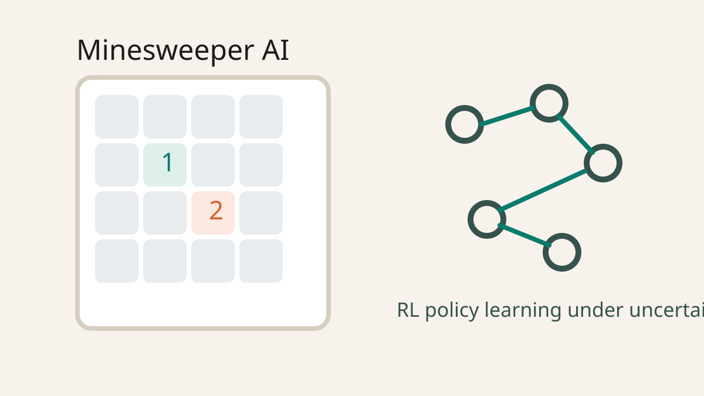

Projects & Experience
This page separates my academic and personal projects from my professional experience. Each card gives a short overview of the work itself, and the linked pages go into technical detail, results, and supporting media.
Projects
Machine learning, robotics, and mechatronics work across class projects, research-style builds, and personal systems.

Seeing Through Occlusion
A video instance segmentation project on OVIS that models object motion through occlusion with multimodal LSTMs, temporal attention, and an occlusion-aware memory bank.
View project

Real-Time Conveyor-Belt Object Detection and Robotic Sorting
A real-time sorting system that detects mixed objects on a conveyor, localizes them in world coordinates, and feeds actions to a downstream delta-arm robot.
View project

Autonomous Driving Local Planner with Reinforcement Learning
A hierarchical CARLA planning framework that combines global A* routing, PPO-based local trajectory generation, and fixed PID tracking for interactive traffic scenarios.
View project

Solar-Powered Terrain Walker
An autonomous quadruped built around linkage-based leg design to reduce actuator count, lower cost, and improve energy efficiency on uneven terrain.
View project

Minesweeper Artificial Intelligence
A deep reinforcement learning agent for Minesweeper that uses learned state representations and reward shaping to operate in a sparse, partially observable environment.
View project
Experience
Full-time and internship roles focused on semiconductor equipment, connected products, and system integration.

Field Service Engineer I - Ulvac Technologies
Production support and retrofit work on semiconductor tools, including hardware rebuilds, controls changes, diagnostics, and fleet reliability improvement.
View experience

Mechanical Engineering Intern - Paltorc
Connected an E-Bike control module to rider-facing software so live telemetry and diagnostics became part of the product experience.
View experience